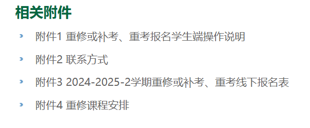
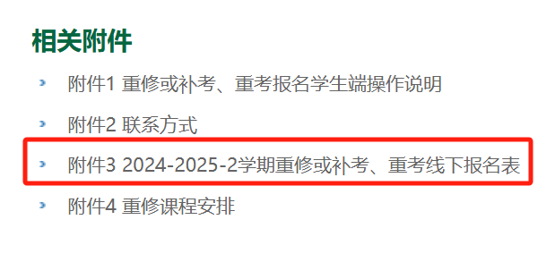
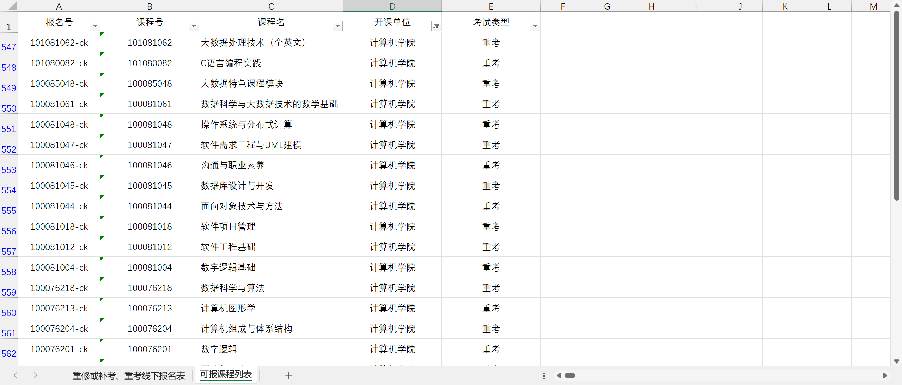
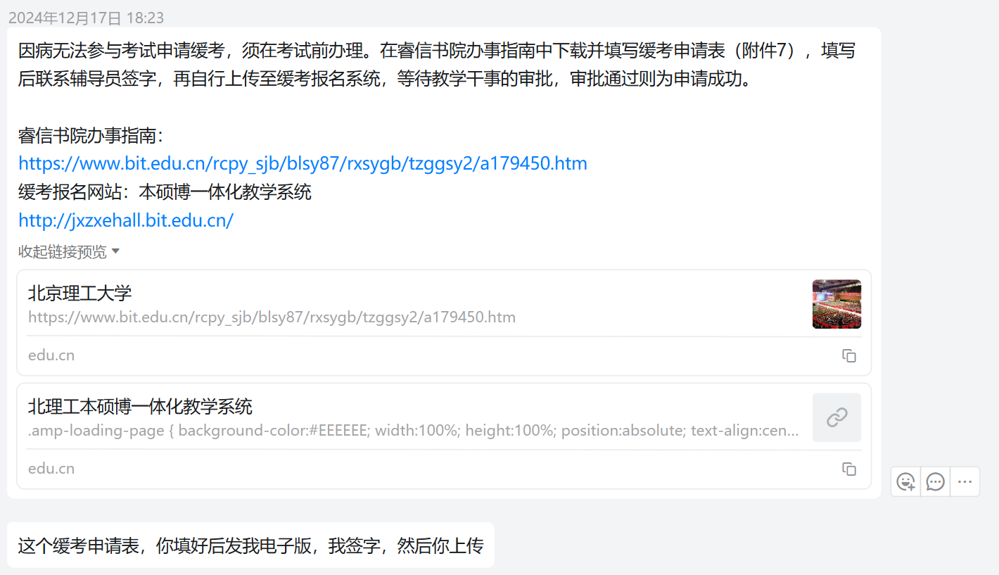
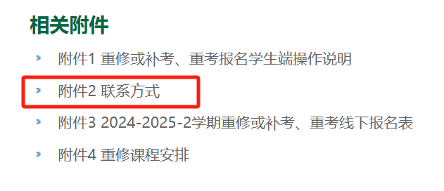
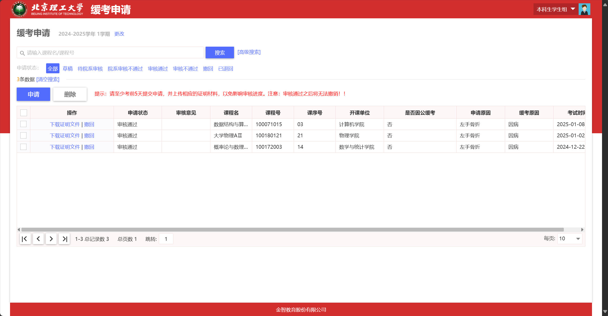

省流版：重要网址、通知、文件
-
北京理工大学教学运行与考务中心 重修补考重考通知集合页面：重修补考重考通知集合页面。包含有各个学期的课程重考/重修/补考的报名通知（如[本科生]关于2024-2025学年第二学期重修或补考、重考报名的通知），后续开课或考试通知，各种课程（不局限于缓考科目）考前答疑通知等各类通知。其中绝大多数（或全部）页面依然有效，可以拿往年的通知和通知附件作为参考，规划后续学期的安排。
-
北理工本硕博一体化教学系统：北理工本硕博一体化教学系统。缓考申请页面可以在顶部搜索栏中搜索“缓考申请”服务，点击进入缓考申请页面。
-
北京理工大学本科生缓考申请表：来源于辅导员发给我的睿信书院办事指南，从网址上来看应该是全校通用的。
-
每学期重修或补考、重考报名的通知的附件。内容涵盖重修或补考、重考报名学生端操作说明，学院教学干事联系方式（邮箱、固定电话），课程重修或补考、重考线下报名表以及课程缓考开设形式，重修课程安排，非常有用。一般为4个附件，如果你当前看到的通知没有4个附件，可能是相应的文件还未制作完成（如重修的安排可能需要一定时间协调），请耐心等待或询问辅导员。

关于本文
声明
本文中涉及到的学校政策和规定的理解，仅代表我个人理解，不具备权威性。同时，本文的写作时间为2025年，随着时间推移，文章中讲到的政策规定可能已经过时。
为保险起见，对于本文中的所有观点，如有怀疑或不理解，请向书院辅导员或学院教学干事确认！！！
写作动机
缓考这件事注定是 “少数人” 才会面对的事情，相应的，官方或非官方网络资源中对于缓考的讲解稀少而缺乏系统性，而主动询问老师或同学可能又存在一些社交上的障碍。在我成为"少数人"之后，处理这些事情所遇到的困难、因为各种不确定性带来的焦虑不安、因为这样的焦虑心理而为我后续其他事情（如恢复保养、考试复习）带来的影响，让我产生了写一些东西，来引导与当时的我有类似处境的同学，更好的面对和走出困境的想法。
主要内容
文章主要围绕我在受伤之后申请缓考，以及后续参与到相应的重修课程及课程考试、重考的复习和考试当中的经历展开，讲解缓考涉及到的基本概念、申请缓考的原因、申请缓考的流程、
这篇文章是基于我（因伤缓考）以及我身边3位不同情况（因事缓考、因缺考补考、因学业压力缓考）的同学的经历来写的。不过由于我只对我自己的情况了解比较透彻，因此文章对于重考重修介绍比较详细，而对于补考介绍略少。如果有相关问题或其他问题，或者有需要补充或修改的点，欢迎联系我进一步说明。
基本概念
有必要首先阐述一下缓考、重考/重修/补考的概念，以方便后续说明。
缓考
实际上，“缓考”并不是一种具体的考试形式，某种意义上可以理解为重考、重修、补考三种考试形式的统称（不过也不完全准确）。通过在缓考申请系统上提交缓考申请表，进行缓考申请。之后，根据课程的缓考开设形式，决定你这门课程是采取重考还是重修还是补考的方式进行缓考。
**可以从每一学期的重修或补考、重考报名的通知的附件的重修或补考、重考线下报名表的可报课程列表，了解相应科目的缓考形式。**当然，为保险起见，还请向学院教学干事加以确认。

例如，计算机学院2024-2025-2学期的缓考开设情况：

重考、重修、补考
这一部分讲解时，每一个概念按照【满分、分数构成（平时分计算）、申请条件、开考时间、后续其他事务、评价】的顺序讲解，时间参照申请缓考的时间（本学年/本学期指的是申请缓考时的学年或学期）来描述。
重考
满分100分。分数构成方面，包含本学年对应课程的平时分，以及下一学年参加重考所得到的考试分数，按照原定的课程成绩分数构成和占比来计算。（当然了有一个问题就是，如果下一学年这个科目的分数构成发生了改变，应当按照什么去计算，这个问题依然待考证）。
申请条件方面，需要你在当年考试之前申请缓考，也就是说没有出现"缺考"记录。开考时间方面，往往与下一学年对应科目考试安排的时间相同。不必担心你这一科的考试时间与下一年的考试时间冲突，详见常见问题。
重考在报名之后，只需要正常进行复习和按时考试即可。考试时间和地点会显示在我的考试安排当中，在可能临近考试时需要特别关注一下，一般没有专门的通知。
简而言之，就是保留这学期的平时分和平时分占比，参加下一年的期末考试。
重修
满分100分。分数构成方面，包含重新计算的平时分，以及重修学期（往往是申请缓考的下一学期）参加重修课程期末考试所得到的考试分数，按照重修课程的课程成绩分数构成和占比来计算。通常来讲，重修课的平时分占比大，考试往往还比较简单，因此为通过缓考来获得高分提供了一定的可能性（具体分析详见以缓考作为一种应考策略。请慎重！！！）
申请条件与重考一致。重修课程会开设线下或线上课程，开设时间往往是申请缓考的下一学期。如果开设线下课程（如概率论），会在我的课表当中显示排课，一般会安排到特定特定教学周的周六日，且比正常上课的课时要少很多，结课和考试比较早。开考时间设置在重修课程结束后，考试时间和地点除了会显示在我的考试安排当中，由于重修课程一般有课程钉钉群，所以在群内老师也会进一步通知。
简而言之，就是重新修读该课程，重新获得平时分和考试分，最终成绩按照重修课程的评分标准计算。
补考
满分60分。不包含平时分，只包含补考考试分数。
可以在任何条件下申请。在无故缺考后，只能申请补考。考试时间往往在下一学期开始后不久（待考证）。
申请缓考的原因
原本这篇文章应该是作为骨折受伤后的事务处理这篇文章的一部分出现的。但是在今年6月，一位同学因为她的一门课程复习压力过大，而向我询问有关缓考的事宜，并真的成功申请了缓考之后，我意识到北理工的缓考政策所认可的申请原因覆盖范围实际上并不狭窄。
各类不可抗力因素
- 因为个人身体健康问题，或者是有明确诊断的心理健康问题，情况严重以至于无法参与考试，考试时无法恢复，而需要去申请缓考；
- 因为承担一些重大事务，考试时无法抽身；
- 忘记参加考试，需要补考；
- 其他……
以缓考作为一种应考策略
从已有案例来看，在北理工，学校似乎对于缓考申请的理由限制并没有那么的严格。因此，除了不可抗力因素，还有忘记参加正常考试，这种必须缓考的情况，缓考也可以作为一种应考策略，理由如下：
- 重考重修对保研要求的成绩排名没有影响：只要你在正式考试前完成了缓考的申请，且申请的是重考或重修（缓考、重考/重修/补考的概念详见基本概念），那么重考或重修课程考试的期末成绩满分就是100分，不会影响保研的排名。但也有对应的代价，在下面会提到。
- 缓解期末复习压力：申请缓考，确实可以缓解你的期末复习压力。这一点很好理解，毕竟少了一门要复习的科目。
- 重修课程往往更容易取得高分：重修课程的期末考试的往往要比普通课程的期末考试简单（毕竟上重修课程的主要群体是对应科目考试挂科的同学，这样做更容易通过重修修得学分），与此同时，部分课程（如大学物理），重修课程的平时分占比也要比普通课程更大，而这些平时分往往是通过慕课等方式修得，获取更加容易。多种因素使得重修课程往往更容易取得高分。
但是，请慎重考虑。选择通过缓考来应付考试，也要面临极大的风险，付出很大的代价，需要选择合适的应对策略。
- 缓考的科目如果
- 缓考科目不宜过多，过多的缓考科目会给之后的学期带来更大的压力。因此请确保之后的学期有充足的时间；
- 缓考
缓考申报流程
联系书院辅导员、教学干事和学院教学干事
出现紧急情况需要缓考，请第一时间联系你的书院辅导员或教学干事，往往他们会给你有用的建议和后续引导。缓考申请表还需要辅导员签字（详见填写申请表，在系统提交申请）。

之后，联系需要缓考的科目所对应的学院。联系方式在本学期或以往的重修/重考/补考报名的通知的附件中会有提到，一般会给出邮件和固定电话的联系方式。一定注意尽量在工作日进行联系！！或者也可以询问教学干事的微信、手机号等联系方式，以实现更方便的联系与咨询。

书院教学干事会对于你需要缓考的科目的相关问题有比较深的了解，例如缓考的形式是重修还是重考，大概的开课时间和考试时间，以及其他相关问题，都可以咨询，对于你的后续安排有很大帮助。
填写申请表，在系统提交申请
填写北京理工大学本科生缓考申请表（参见重要网址、通知、文件），交由书院辅导员签字。可以线下签字，如果线下不方便，也可以考虑让辅导员把签名扫描之后发电子版，粘贴到申请表PDF上。
在缓考申请系统填写申请，上传缓考申请表。

这是2024-2025-2学期的重修或补考、重考报名学生端操作说明，在[本科生]关于2024-2025学年第二学期重修或补考、重考报名的通知）的附件当中，可以作为参考。
后续课程和考试的参与
重修课程学习和考试参与
请重视平时成绩。 重修课程的平时成绩往往获取容易且占比较大，对于重修课程期末成绩的影响比较大。
关于大物重修
大学物理的重修课开设了慕课和智慧树两个线上学习平台。其中慕课需要完成作业（包含填空题和大题）、互评以及完成期末考试。由于慕课的作业截止日期一般是放出后的2-3周，所以存在忘写的可能；同时，大物重修一般是两本书，分成两个慕课课程。有时第二本书的课程会悄无声息的开课并布置作业，当你意识到时，可能有的作业已经截止了。因而丢失大量平时分。所以选择慕课方式需要注意时间节点。
智慧树需要刷视频课、完成知识图谱练习（一个知识点5道选择题）、讨论区发表评论。智慧树的所有练习的截止时间都是结课时间，讨论区评论分数占比较小，最终考试的形式也都是选择题，因此比较容易取得很高的平时分。而大物的平时分计算方式是慕课和智慧树取最高分，因此如果此前选择慕课平台，但已经丢失了不少的平时分，可以通过智慧树来补救。
关于智慧树的讨论区评论分数，有一套具体的互动分获取规则。其中的有效回答数比较难以获得，有余力的话可以考虑联系同学互刷。
重考考试的复习和参与
补考考试的复习和参与
补考考试时间往往在下一学期开始后不久（待考证），因此需要抓住申请缓考所在学期和下一学期之间的假期及时复习。
常见问题
缓考有什么影响？影响保研吗？
- 缓考当中的重考和重修不会对保研的成绩排名计算产生负面影响，但补考会。但不能说重考重修对于保研没有任何影响。重考重修课程会在你的可信成绩单上对应科目做出标记，在后续保研套磁过程中，往往需要投递简历和成绩单，有可能导师会注意到这一点。
- 缓考会影响下一学期的奖学金和荣誉评选，以及下一学年的年度奖学金（如国奖）和荣誉评选。
什么课程会开设重考，什么开设重修？
可以从每一学期的重修或补考、重考报名的通知的附件的重修或补考、重考线下报名表的可报课程列表，了解相应科目的缓考形式。当然，为保险起见，还请向学院教学干事加以确认。
缓考系统提示：请至少考前5天提交申请？
实际上，这里说的至少考前5天提交申请，并不意味着考前不到5天时，系统会关闭，或者申请会被拒绝，仅仅是一个保守的说法。如果你在考前5天之内受了很严重的伤，临时无法考试，那么只要在考前提交申请，并催促对应学院教学干事给予通过，就能够成功申请缓考。
当然了，如果受伤时真的很临近考试，迫不得已在考试后才申请缓考，由于我没有遇上过这种情况，所以我并不了解这种会被如何对待（理论上也能够成功申请吧）。
不过为了保险起见，请在申请缓考后，进一步打电话或者其他方式催促书院教学干事给予通过。
我这个学期为了大学物理课程加分，报名了全国部分地区大学生物理竞赛并获得了奖项，但我又申请了大物的缓考，那这个奖项还会加期末总分吗？
不会。 大物的缓考是以重修方式实现的，重修课程的平时分会重新计算，因此不会计算上一学期的比赛加分。当然了，我所了解到的仅仅是大物，如果其他科目有类似情况的话，还请进一步询问对应科目的老师和对应学院的教学干事。
我的某一科缓考了，在下一学期或者下一学年考，这门科目的考试时间会与我那个学期的其他考试时间冲突吗？
请放心，不会。 我就此问题向计算机学院教学干事确认过，是不会的（不考虑极特殊的情况）。学校的考试安排系统在安排考试时，也会把缓考这类考试状态异常的学生考虑在内，因此不会出现考试时间冲突。不过考试时间可能会被安排在工作日的某一个时间段，而不是周六日。当然了，也请放心，不会与你的正常课程安排冲突。
报名缓考后，这一科目的考试时间会以什么形式通知到我？
会显示在i北理（钉钉）——我的考试安排当中。 重修课程一般还有课程群，在其中也会有考试相关消息的提醒。但重考一般没有专门的通知，在可能临近考试时需要特别关注一下。
这一学期的重修或补考、重考报名的通知刚刚发出来，我发现下面的附件好像不全（往年一般是4个固定标题的附件）
这个通知的附件似乎不是一次性上传完毕的，可以稍等几天再来看一看是否上传完毕，或者可以咨询书院辅导员或学院教学干事。
闲话
本来这篇文章计划在完成大物和概率论的重修考试后写的。结果因为各种原因又搁置到现在。现在看来，这个博客上写的东西也有很多回旋镖，所以我把包含回旋镖的内容都给隐藏了^^;
先向前看吧，希望暑假结束时回看现在，需要隐藏的内容能少一些。（包括这一行）